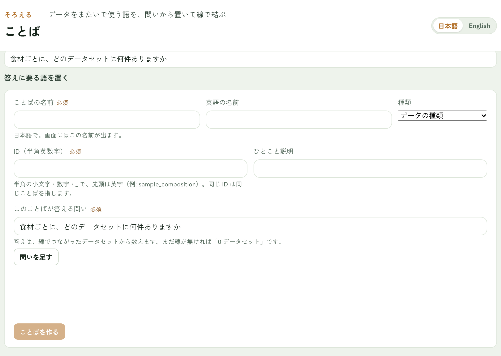
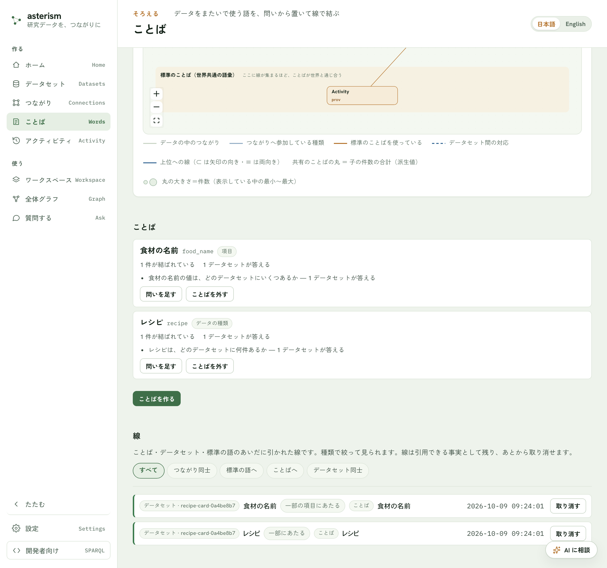

知りたいこと — 問いから用語を決める・標準用語に合わせる・関係を決める
用語とは
複数のデータセットをまたいで使う「データの種類」と「項目」の名前を、用語と呼びます。用語には 2 通りあります。
- 取り込んだデータが使っている用語 — 各データセットの設計から自動で集まります。複数のデータセットで名前が揃っているほど、データをまたいだ質問や比較ができます。
- 人が作る用語 — 人が名前を付けて作る、実体を持たない用語です。個々のデータは持たず、名前だけを持ちます。データセットや標準用語と関係を決めて初めて、質問に答えられるようになります。
人が作る用語は、問いに答えるために作ります。問いのない用語は作れません。
入口
メニューの「知りたいこと」から、次の 4 つが同じ画面で見られます。画面上部の「？ 知りたいことを書く」ボタンからは、問いを書く欄が開いた状態で入れます。
- 問いを書く入口（「問いから始める」）
- 用語の地図
- 用語の一覧（用語を作る）
- 決めたこと（用語・データセット・標準用語のあいだで決めた関係の一覧）
問いから始める v0.53.0 (2026-10-14) で追加
画面の最初に「問いから始める」の節があります。知りたいことを 1 文で「問い」に書き、答えに要るもの（データの種類・項目）を「答えに要る語を置く」で置いていきます。データがまだ無くても書けます。保存するときは、用語と問いをいっしょに保存します。


問いが先でも、用語が先でも、「問いのない用語は作らない」ことは同じです。
Ask からの持ち込み
Ask（質問する）で、問いに答えられなかったとき（答えが無かった回答の下）は、「この問いに答えられるように、用語をつなぐ」ボタンでここへ来られます。問いの題だけが持ち込まれ、答えに要る語はあなたが置きます（AI は使いません）。
用語を作る v0.53.0 (2026-10-14) で追加
「用語を作る」で作ります。
- 標準用語を先に探します。 英語の名前（または取り込み時の列名）で標準用語の一覧から機械的に探します（AI は使いません）。合うものがあれば「この標準用語を使う」を選ぶのがはじめの選択です。選ぶと、用語は作りません（書きかけの問いも保存されません）。「決めたこと」の節の「標準用語へ」で、データセットの種類・項目をその標準用語に合わせてください。標準用語を照合している間は、「用語を作る」は押せません。
- 標準用語を使わないときだけ、「使わずに新しく作る」を選び、理由を書きます（記録に残ります）。
- 名前・ID（slug）・ひとこと説明を入れます。ID は半角英数字（小文字で始まり、英小文字・数字・アンダースコア）で、人が入れます。英語の名前や標準用語があれば、それを元にした案が入ります。同じ ID の用語がすでにあるときは作れません（その用語を使ってください）。
- 問いを 1 つ以上書きます（必須）。作る画面の「問いを足す」で、保存する前に問いを増やせます。作ったあとは、「知りたいこと」の一覧にある各用語の「問いを足す」から、あとで問いを足せます（題を書くと、問いの数え方は種類なら件数、項目なら値と決まっています）。
種類は「データの種類」か「項目」のどちらか一方です。
まだ答えるデータがない（孤立の札）
作ったばかりの用語には「まだ答えるデータがない」の札が付きます。その用語の問いに答えるデータセットがまだ 1 つも無い状態です。この間は、用語は一覧と地図には出ますが、質問（Ask）や外部のツール（MCP）には出ません。関係が決まって答えられるデータセットができると、札は外れます。用語同士の関係だけでは札は外れません。札の付いた用語が 20 個を超えると、一覧の上に注意が出ます（作れる数の上限ではありません）。
用語を外す
「用語を外す」で外せます。関係が残っているときは外せないので、先に関係を外してください。
用語の地図 v0.40.0 (2026-09-02) で追加
「知りたいこと」画面の中に「用語の地図」が表示されます。データセットがつながるほど、この地図は育ちます。見せかたは「全体」（はじめの表示）と「詳しく」の 2 つで、次の「「全体」と「詳しく」」で違いを説明します。以下の線（図に描かれる線）の説明と集計は、おもに「詳しく」の表示のものです。
「詳しく」では、設計のあるデータセットの「種類」（箱）と「項目」（箱の中）をひとつの図に重ねます。箱を押すと、そのデータセットの詳細ページに移動します。図の下の帯は標準用語（世界共通の語彙）です。線は 4 種類あります。
- 灰色の実線 — データの中のつながり（種類どうしの関係）
- 緑の実線 — 標準用語を使っている（確定）
- 琥珀の点線 — 標準用語の候補（名前がほぼ一致する標準用語。まだ確定していません。候補は一覧から機械的に探すもので、AI は使いません）
- 青の点線 — データセット間の対応（「視点をつなぐ」で確定したもの）
なお、琥珀の点線は「詳しく」の標準用語の候補だけです。「全体」では、標準用語を使っている（確定）線を琥珀の実線（細め）で描きます。
用語の帯と「関係を決める」 v0.53.0 (2026-10-14) で追加
地図には、標準用語の帯の上に用語の帯が出ます（「全体」の種類まで開いたときと「詳しく」。データセットごとの丸の段では描きません）。種類の丸から用語へ向きのある線が、用語から標準用語へ同じ意味の線が伸びます。丸の大きさは、つながっているものの件数の合計です（派生した値です）。データセットが 0 件でも帯は描きます。配置は、同じ入力なら必ず同じになります。
地図で丸を 2 つ選ぶと「関係を決める」が出ます。小さなフォームで関係の種類を選んで確定します。選べる関係は、2 つの端の種類で絞られます。その関係が答える問いは、書いても書かなくても構いません。決めた関係は「決めたこと」の一覧に入ります。


図の上の集計（データセット・種類・項目・標準用語を使用・標準用語の候補・対応）は、同じ内容を数字で表したものです。「全体」のときの集計は、全体図に描いたもの（データセット・種類・つながり・標準用語・種類の件数の合計）だけを数えます。
「全体」と「詳しく」 v0.51.0 (2026-10-07) で追加
地図の上の「全体 ／ 詳しく」で見せかたを切り替えられます。はじめは「全体」です（選んだほうは次に開くときも覚えています）。

- 全体 — 種類を丸で描きます。丸が大きいほど、その種類のものが多く入っています。大きさは、いま図に出ている丸の中での比べです（図が変わると、同じ件数でも大きさが変わります）。件数は大きい丸なら丸の中に短く（「120万」など）、小さい丸なら名前の下に「820 件」と出ます。マウスを載せると正確な数が出ます。丸はデータセットの枠の中に並び、真ん中の丸は複数のデータセットをつなぐ「つながり」です。種類からつながりへ線が伸びます。標準用語は下の帯です。線は、間にある別の丸やその名前に重ならないよう、曲がることがあります。項目までは描きません。
- データセットが多いとき（7 つ以上、または種類が合わせて 41 以上のとき）は、丸が種類ではなくデータセットになります。丸の大きさは種類の件数の合計（図の中での比べ）で、件数は丸の中に、名前の下には「N 種類」と出ます（小さい丸は名前の下に「N 種類・M 件」）。真ん中の帯が「つながり」で、データセットはその上と下に並びます。線はデータセットからつながりへ 1 本ずつ（線に載せると「N 種類が参加」と出ます）。

- その丸（またはつながり）を押すと、その周りだけが種類の丸で開きます。ほかのデータセットは、つながりに参加している種類だけが出て、枠に「ほか N 種類」と書かれます。参加者が多いときは、上の帯に「ほか N 個のデータセットは省いています」と出て、数の多い順に一部だけが描かれます。上の「全体に戻る」を押すと元の図に戻ります。

- 丸やつながりにマウスを載せると、そこにつながる線が濃くなり、ほかの線は薄くなります。
- 詳しく — 種類を箱で描き、箱の中に項目を並べます。項目が標準用語に合っているか（使っている・候補・対応）まで見られます。
どちらの表示も、右上のボタンで窓いっぱいに広げて見られます（広げた中ではホイールで拡大縮小・Esc で戻る）。
「全体」（データセットが少ないとき、または周りを開いたとき）で丸を押すとその種類のページ、枠の名前のあたりを押すとそのデータセット、真ん中のつながりの丸を押すと「つながり」の画面に移ります。「全体」の線は、灰の実線がデータの中のつながり、青い実線がつながりへの参加、琥珀の実線が標準用語を使っている種類、青の点線がデータセット間の対応です。
一覧の見方
一覧に並ぶのは、いま使われている用語です。データの種類は件数（その種類のものが何件あるか）、項目は使用回数で表示されます。数えるのは公開済みのデータだけです。公開前の下書きは含まれず、公開すると集計に入ります。
それぞれの用語には、その用語を使っているデータセットの一覧も付きます。


決めたこと
用語の下の「決めたこと」に、用語・データセット・標準用語のあいだで決めた関係が一覧で並びます。関係は引用できる事実として残り、あとから取り消せます。見る範囲を次の 4 つから選べます。
| 範囲 | 何の関係か |
|---|---|
| つながり同士 | 別々に作ったつながりが、同じものを指しているという対応 |
| 標準用語へ | データセットを選び、そのデータセットが作った種類・項目を標準用語に合わせる（合わせた関係もここで見られる） |
| 用語へ | データの種類・項目から、用語へ結んだ関係 |
| データセット同士 | データセットの種類どうしの対応 |
各行には両端（データセット・つながり・用語・標準用語の札つき）、関係の種類、日付が出ます。その関係が答える問いを選んで決めたときは、問いの題も出ます。結んだ先が今は見つからない関係は「切れている」と表示されます。「取り消す」ボタンで取り消せます。取り消した関係は、いつでも決め直せます。
関係を決めるときは、用語の結び先を循環させることはできません（すでに下にあるものを上に結ぶなど）。まだ作っていない用語や、種類と項目を混ぜた関係も決められません。
従来の「つながりどうしを対応づける」と、標準用語への対応は、ここに移りました。元の画面には、ここへの案内だけが残っています。
用語の名前を直す
用語の名前を直したいときは、そのデータセットを開いて「設計を見直す」ボタンから変更できます。複数のデータセットが共通で使う用語は、名前を変えるとそれを使うすべてのデータの検索・回答に影響するので注意してください。
標準用語に合わせる（任意） v0.5.0 (2026-06-15) で追加
自分のデータ専用の用語を、よく使われる標準用語（QUDT・schema.orgなど）に結びつけることができます。合わせておくと、他のデータと自動でつながり、外部のツールや AI もそのまま理解できます。合わせるかどうかは任意で、合わせなくても検索・引用はそのまま使えます。
合わせ方
データセットの「中身」タブを開き、候補から選びます。候補は標準用語の一覧から機械的に探すもので、AI は使いません。英語のふつうの言い方（例: temperature, crystal structure）でも検索できます。合わせたい候補が見つかったら「この標準に合わせる」ボタンで確定します。あとから解除することもできます。
この列は何を測っているか v0.17.5 (2026-08-21) で追加
項目名を標準に合わせるのとは別に、「この列は何を測っているか」という問いにも合わせられます。単位が手がかりになるので、項目名が略記でも見つかることがあります。合わせておくと、「熱伝導率を測った人」のようにデータをまたいで横断的に探せるようになります。
すでに使われている標準
データの中ですでに使われていた、よく知られた標準用語は、自動で検出されて一覧に表示されます。あらためて合わせる操作をしなくても、最初から標準に沿っている場合はそのまま表示されます。
関連
- データどうしをつなぐ話は crosswalk.md を参照してください。
- 公開の流れは getting-started.md を参照してください。